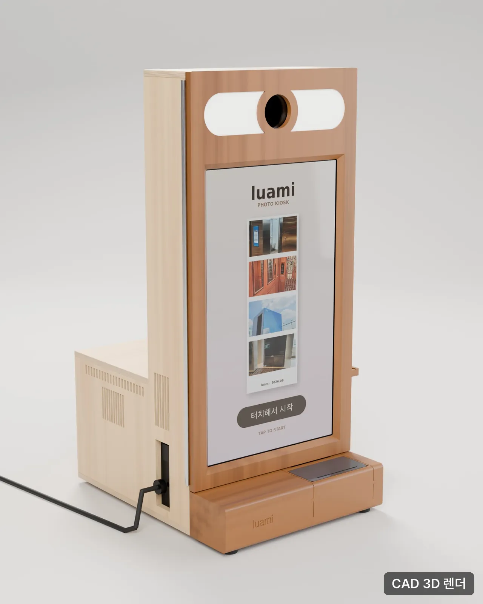
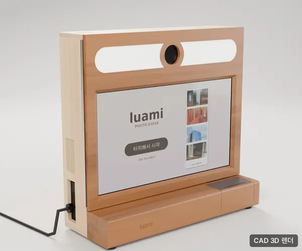
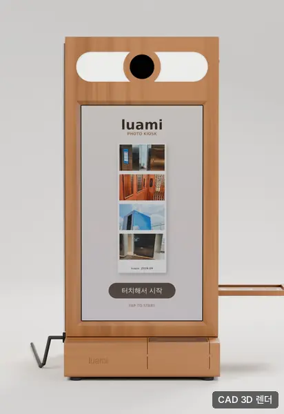
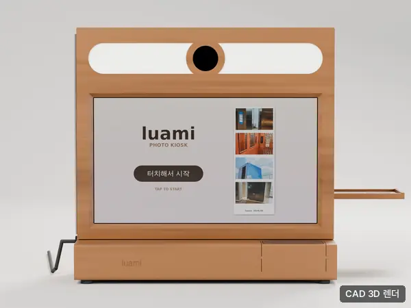
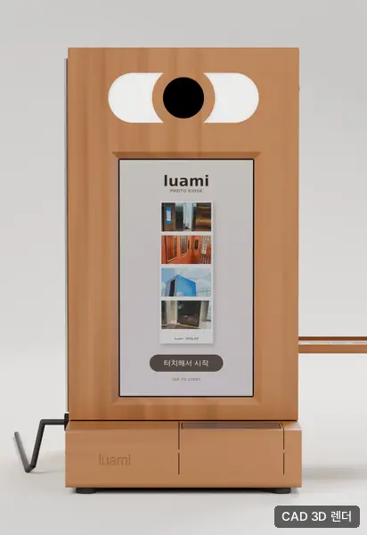
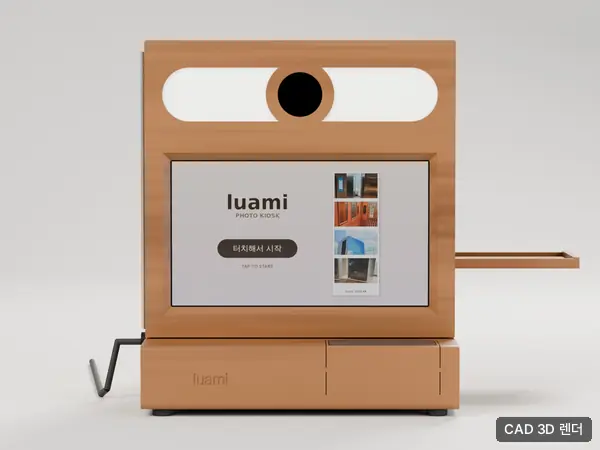
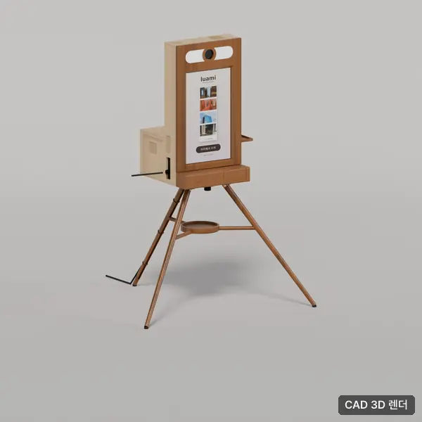
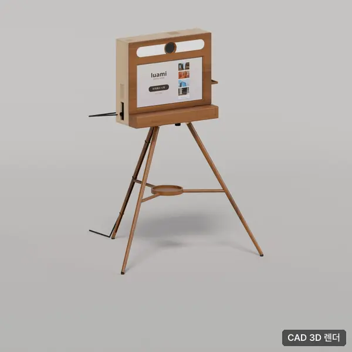
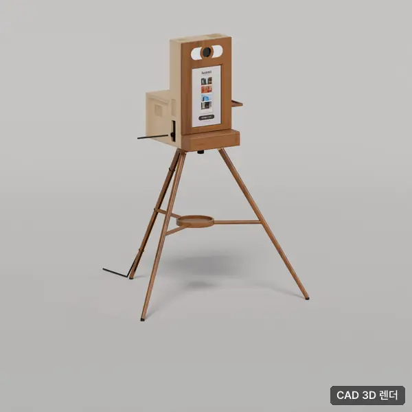
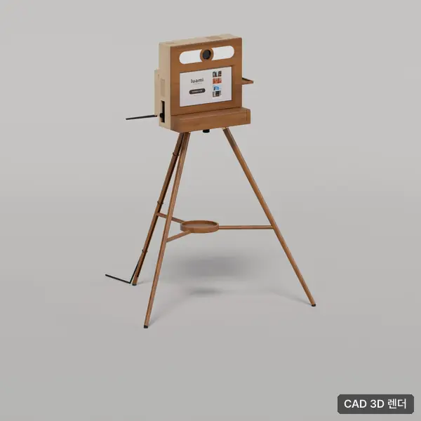

테이블 위에 두는 화이트오크 원목 셀프 포토키오스크
자작합판 몸체에 화이트오크 앞판을 댄 탁상형 셀프 포토키오스크예요. 화면과 카메라, 프린터, 카드 결제 단말을 한 몸체에 담아, 부스를 둘 수 없는 카페나 웨딩홀, 팝업 매대에서도 가구처럼 놓고 쓸 수 있어요.
사진을 누르면 크게 볼 수 있습니다. 아직 실물 사진이 없어 설계 3D 이미지(CAD 3D 렌더)로 보여 드립니다.

CAD 3D 렌더CAD 3D 렌더 · 24인치 가로형
CAD 3D 렌더CAD 3D 렌더 · 정면 (측면 결제 받침대)
CAD 3D 렌더CAD 3D 렌더 · 24인치 가로형 정면
CAD 3D 렌더CAD 3D 렌더 · 15인치 세로형
CAD 3D 렌더CAD 3D 렌더 · 15인치 가로형
CAD 3D 렌더CAD 3D 렌더 · 삼발이 스탠드 (24 세로)
CAD 3D 렌더CAD 3D 렌더 · 삼발이 스탠드 (24 가로)
CAD 3D 렌더CAD 3D 렌더 · 삼발이 스탠드 (15 세로)
CAD 3D 렌더CAD 3D 렌더 · 삼발이 스탠드 (15 가로)몸체는 자작합판, 앞판은 화이트오크 원목이에요. 화면 방향(세로형·가로형)에 따라 크기가 달라져요. 제품 이미지는 CAD 3D 렌더 기준이라 세부 디자인은 바뀔 수 있고, 최신 사양은 상담 때 안내해 드려요.
운송비 별도 · 표시한 금액은 모두 부가세 별도입니다
포토키오스크 목재형 · 키오스크만1대
| 월 50만원 부가세 별도 |
|---|---|
| 인화지 추가700매 | 13만원 부가세 별도 |
| 구매 · 포토키오스크 목재형 | 600만원 부가세 별도 |
네. 월 단위로 빌릴 수 있고 인화지 700매가 함께 제공돼요. 추가 인화지는 700매 단위로 구매할 수 있어요.
부스형은 사방이 막힌 촬영 공간을 따로 두고, 목재형은 테이블 위에 올려 바로 찍어요. 공간이 좁거나 인테리어 톤을 지켜야 하는 곳에 잘 맞아요.
네. 대기화면과 인화 프레임을 행사나 브랜드에 맞게 구성할 수 있어요. 웨딩이라면 두 사람 이름과 날짜를 넣은 프레임으로 운영할 수 있어요.
네. 오래 두고 쓸 곳이라면 구매를 권해 드려요. 구매가와 렌탈 조건은 가격 안내 페이지에서 확인할 수 있어요.
장소·날짜·대수를 알려 주시면 24시간 안에 구성과 견적을 보내 드립니다. 상담·견적은 무료입니다.